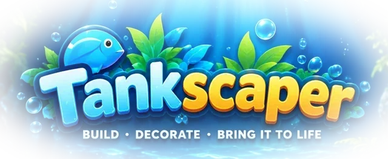
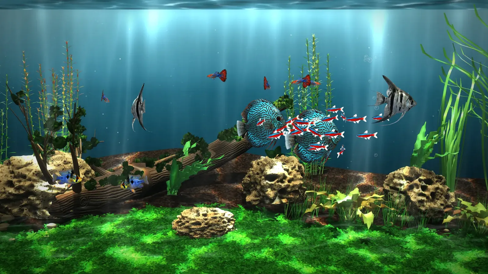
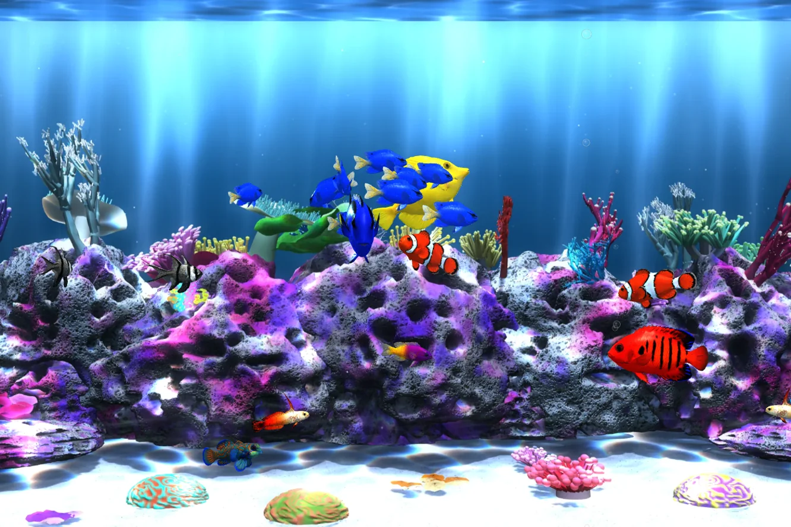
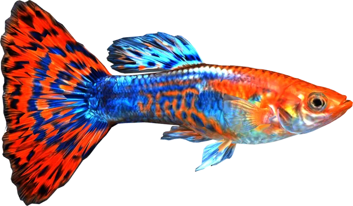
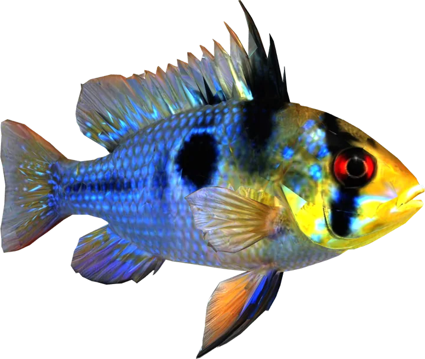
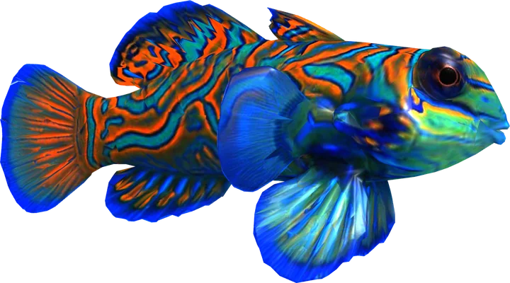
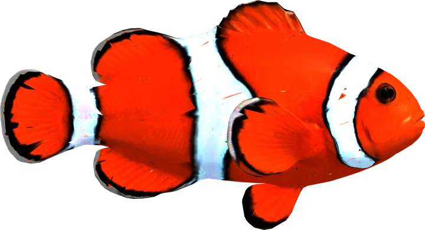
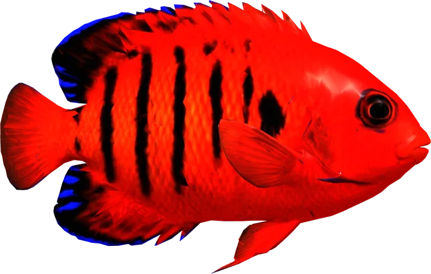
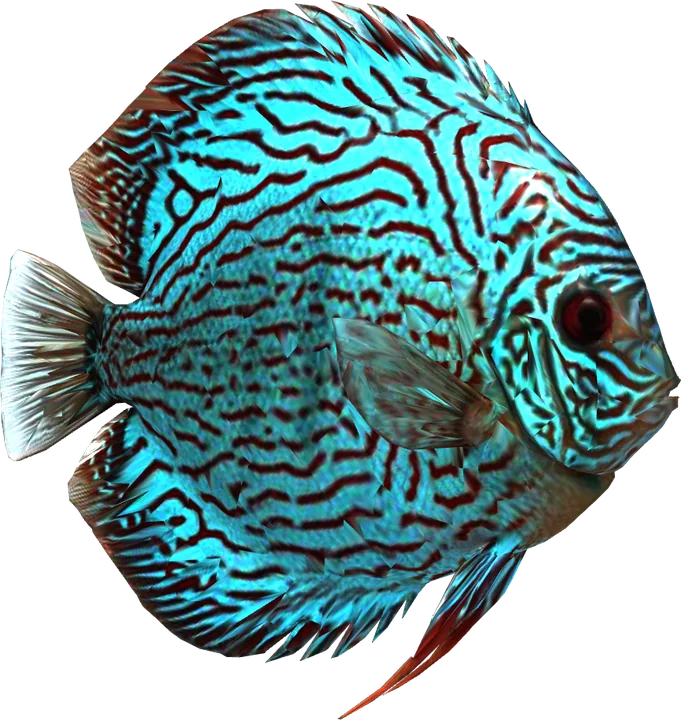

From the start
Freshwater Room
It starts in Aunt Marina's living room, where you uncover her old tank. From there the room fills up, tank by tank: planted tanks, tetras, goldfish, plecos and the big exotics.

Start with one old tank. Build up to a whale.
A 3D aquarium tycoon game for iPhone and Android.
Stems bend from the base and the wave runs up to the tip. Floating plants trail their roots. In the reef, sea fans and soft corals sway with the flow.


Pick a tank from a 30 cm nano to a 300 cm show tank, then lay Seiryu stone, spider wood, carpets and stem plants the way you would in real life. Rocks settle, wood leans, and plants grip what they sit on.
Paint carpets and gravel, colour your corals and choose each fish's colour form. Give any fish a name and it stays on its card. Tetras school, catfish work the sand, and rays glide and settle.
Feed the fish, clean the glass and test the water. Tanks earn coins while you're away, and there are daily goals, seasonal events, 25 achievements and golden fish to find.


Each one starts its own way, and Aunt Marina guides you through the story. The fourth, The Big Blue, is further down.
From the start
It starts in Aunt Marina's living room, where you uncover her old tank. From there the room fills up, tank by tank: planted tanks, tetras, goldfish, plecos and the big exotics.
Opens at level 3
It starts as a run-down garage. Clear it out and make it over, with a water station for water changes. Then come the corals, clownfish, tangs, anemones and the shrimp that clean them.
Opens at level 7
Tidy it up, lay new floors and paint the walls. Then fill it with display tanks while customers come in, browse and buy. Your regulars wear name tags, point at the fish they like and say what they think.
Each one asks for a tank. Build it the way they asked and they pay, say thanks and come back for another. Here is what they ask for.
A tank for my grandson. Nothing fancy: a few plants and some bright little fish.
A betta for my desk. Just the one, with some plants to hide in.
Something calm for the counter. Lots of green, a few peaceful fish.
A betta, but with some friends who won't pick on him. Is that a thing?
A shoal. One kind of fish, lots of them, all moving together.
Livebearers, dear. Platies, mollies, that sort. I like a busy, cheerful tank.
Something quiet for the reading corner. Rasboras, a gentle shoal, and plenty of plants.
Blue fish. The brightest blue ones you've got, zipping about a reef.
The night shift needs something soothing. Little tetras, a big glowing shoal of them.
Tough fish for the club rooms. Tiger barbs: fast, stripy, always in formation.
I work nights. I want fish that come out when I get home: loaches, and something with them.
A planted jungle. Thick with greenery and not too many fish.
A reef for the shop window. People should stop for the fish and stay for the bread.
A community tank the kids can learn from. Four kinds of fish living together.
Angelfish, gliding through tall plants. I saw it in a magazine and can't stop thinking about it.
A reef beside the pass. Ten fish, four kinds, all in good health. I notice everything.
A yellow tang. Bright as a channel marker, with a proper bit of reef to cruise.
Discus. The king of fish. My husband always wanted them, so now I will have them.
Fancy goldfish, chosen with care. Orandas, ranchu. Each one a living jewel.
For my research: thirty fish, with one great shoal of tetras among dense planting.
Guppies! The ones with the big fancy tails. I've saved my pocket money.
Shrimp. A little jungle of plants with shrimp picking through it.
We want three different kinds of fish. Finn picks one, I pick one, and Mum picks one.
Goldfish, like I had as a boy. A big tank, mind. They grow.
Catfish. I like a fish that minds its own business down the bottom.
Clownfish. A pair, with a coral or two for them to call home.
A tiny reef for my studio. A goby keeping watch over a few corals.
Something for the waiting room. Big, bright and easy on the eye.
Reef shrimp are the coolest things alive. Shrimp and loads of coral, please.
Corals. As many colours as you can fit, and a few fish to swim through them.
A river bank for my science class. Fish that like fast water over stones.
I'm a vet, so I'll notice. Healthy fish, good water, room to swim.
Goldfish. Proper big ones, and plenty of them, like the dam back home.
A big reef for the lobby. Tangs, the yellow or blue ones, and plenty of coral.
Rainbowfish! The children voted and it was unanimous. Well, nearly: one vote for a shark.
We want a reef in the studio window. Coral, and lots of it: a dozen at least.
A showpiece for the town hall. The best reef you can build.
Cichlids from the African lakes. Yellow and blue, bold as anything, behind the bar.
A grand reef for the members' lounge, with a dwarf angelfish as the star.
Our members would like to see what you can really do. The biggest tank, five kinds of fish, a forest of plants.
Wants a freshwater tankWants a reef tank
The fourth and biggest place, at level 20.
A public aquarium of your own, and visitors pay to come in.
And the sea floor is yours to scape.

Tank sizes are length × width × height, the way a fish shop lists them.
30, 45 and 60 cm tanks and your first fish room
75 × 40 × 45 cm tank
The Reef Room and a 90 × 45 × 45 cm tank New place
120 cm tank
The Giant 300, the tank for exotics
150 × 50 × 55 cm tank
The Fish Shop. It opens small, and display tanks, tank walls and exotics tanks open up as you trade New place
180 cm tank and a bigger shop
The Big Blue Last new place
And it keeps going. A new keeper rank every 10 levels, a reward chest every 5, and every level adds 1% to all your income.
The water rules come from real fishkeeping: cycle the tank, match fish to the temperature, don't overstock, and keep up with water changes. Every fish is its real size, too. Here are six of the 81 against one ruler.

Guppy 4.5 cm

German blue ram 6 cm

Mandarin dragonet 7 cm

Ocellaris clownfish 8 cm

Flame angelfish 10 cm

Discus 15 cm
There's no date yet. The store pages open once testing is done.
Nothing to download and play. Gems buy premium floors, walls and perks, and daily goals and chapters give you some too.
It's made for iPhone first. iPads can run the iPhone version.
Your game saves on your phone, and Settings has Save a backup, so you can keep a copy somewhere safe.
Email support@tankscapergame.com, or see the support page.